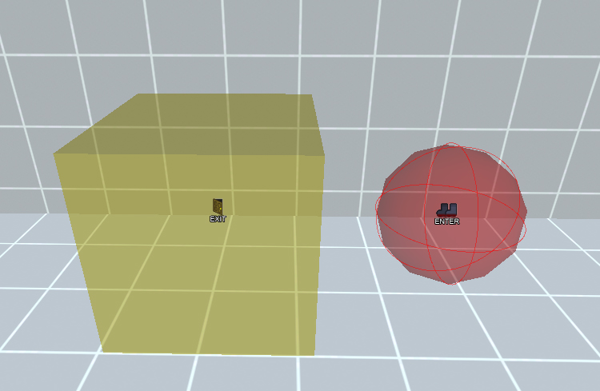
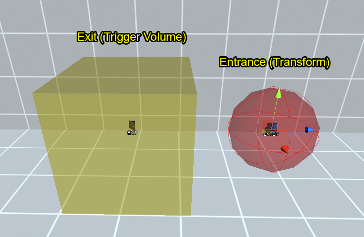
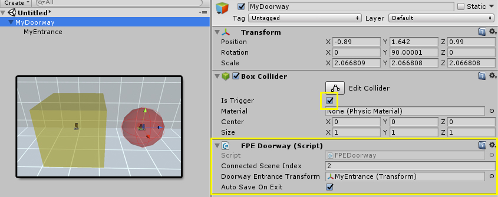

First Person Exploration Kit: Doorways and Levels Overview
Doorways
The FPEDoorway component provides the means to create doorways between Unity Scenes

Overview
Doorways are used to create a way for the player to change scenes. They are comprised of a Box Collider
(Trigger) to detect player exit, as well as a child transform to act as the entrance. When the player
exits using a Doorway, the specified scene is loaded, and the player is placed in the entrance of the Doorway
in the loaded scene

To create a new Doorway:
- Add a Cube to your scene
- Delete the Mesh Renderer and Mesh Filter from the cube, and check the Trigger check box on its Box Collider
- Add the FPEDoorway component (script) to the cube
- Add a child transform (Empty Game Object) to the cube
- Assign the new child transform to the Doorway Entrance Transform field in the inspector
- Scale the cube to be the required size (i.e. make sure it spans the required doorway or area where the player must go into to use the doorway
- Change the position of the Entrance Transform so that it does not overlap with the main yellow volume
- Change the rotation of the Entrance Transform so that its Z+ (blue arrow) is facing the direction "out" from the doorway. When the player is placed in the entrance, they will face the same way as the blue arrow.
- Assign the desired scene build index in the Connected Scene Index field in the inspector. This must match the Scene Build Index in the Build Settings. (e.g. A value of 2 will connect the doorway to the scene at build index 2)
- Lastly, if you want the game to automatically save the state of the scene the doorway is in (recommended in most cases), leave the Auto Save On Exit checkbox checked.
A completely configured Doorway (per the steps above) is shown here:
